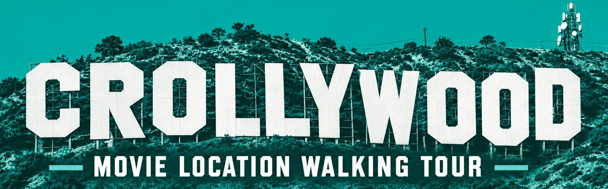

A self-guided walk through Croydon's movie locations
by Richard DeDomenici
CROLLYWOOD is a self-guided Croydon movie location walking tour by Richard DeDomenici: from Batman to Taylor Swift, starting and ending at the David Lean Cinema.
Created by Richard DeDomenici: dedomenici.com
Part of The Redux Project: thereduxproject.com
With Croydonites Festival: croydonites.com
Tour start and finish: David Lean Cinema, Croydon Clocktower.
▶ Watch the previous tour: CROLLYWOOD | Croydon Movie Location Tour (YouTube)
Satellite imagery © Esri, Maxar, Earthstar Geographics and the GIS User Community (Esri World Imagery). Street View © Google. Route data © OpenStreetMap contributors (ODbL). Walking route by OSRM / routing.openstreetmap.de. Map library Leaflet.
Film posters and title cards are © their respective rights holders. They come from Wikipedia and are shown at low resolution only to identify each film.
Each stop lists its sources and a confidence rating. The main source is Richard DeDomenici's own 'CROYDON REDUX' map, plus local press (Inside Croydon, MyLondon, Your Local Guardian), movie-locations.com, London on Location, IMDb and others.